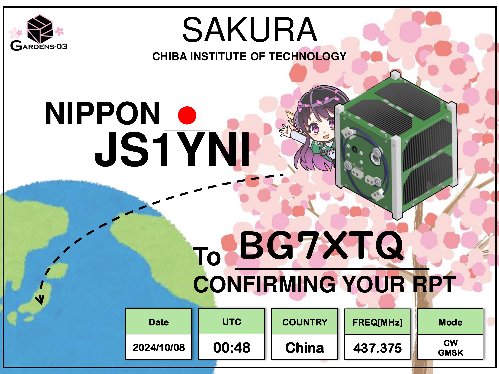
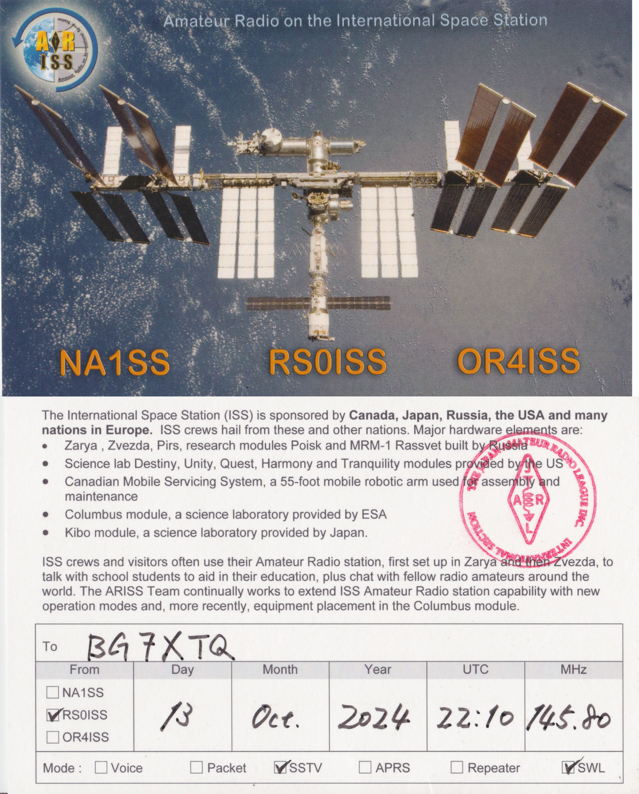
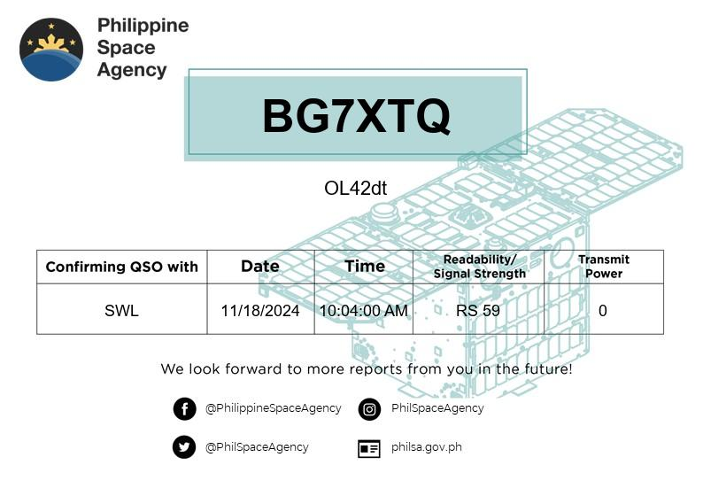
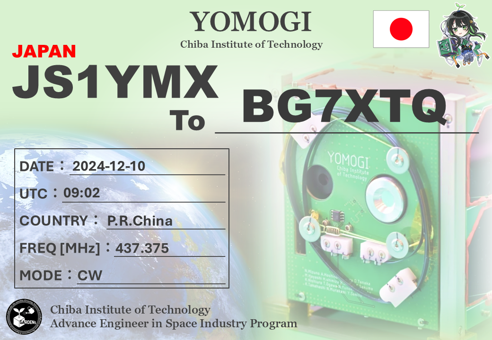
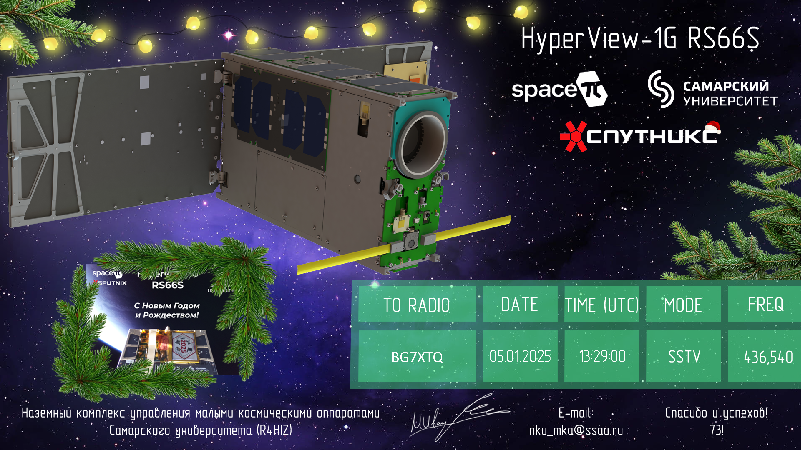
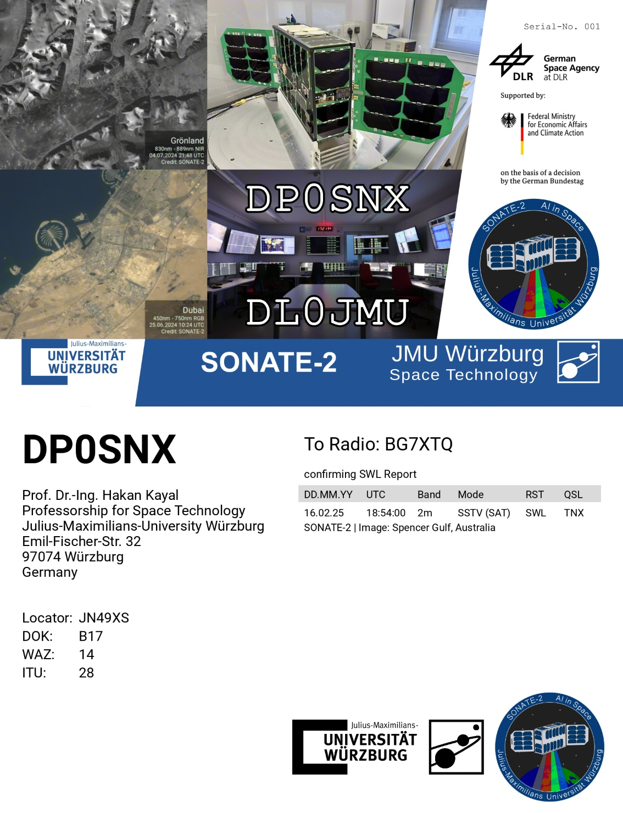
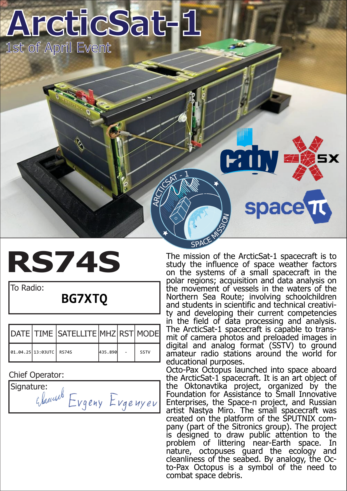

ORBICRAFT-ZORKIY (RS15S) (2023-05-09) - SSTV (digital)
SAKURA (JS1YNI) (2024-10-08) - CW (digital)

ISS QSL Card for SSTV reception from RS0ISS (2024-10-13)

PO-101 (2024-11-18) - FM (digital)

YOMOGI (JS1YMX) (2024-12-10) - CW (digital)

Hyperview-1G (RS66S) (2025-01-05) - SSTV (digital)

SONATE-2 (DP0SNX) (2025-02-16) - SSTV (digital)

ARCTICSAT-1 (RS74S) (2025-04-01) - SSTV (digital)
